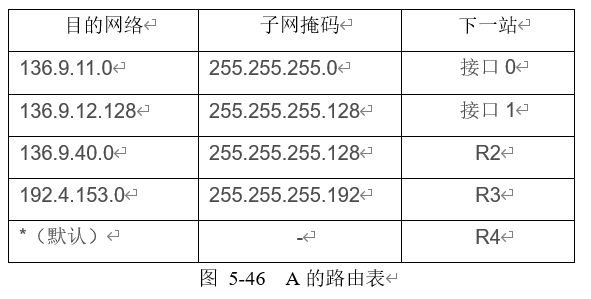
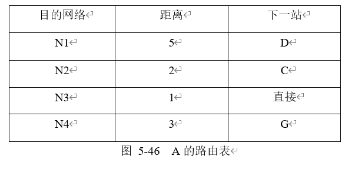
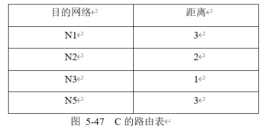

返回
第五章 网络层
一.填空题
1. 为减少转发表中的重复项目，可以用一个
默认路由
代替所有具有相同“下一站”的项
目，它比其他项目的优先级低。
2. 若利用划分子网的方法将一个B 类IP 地址块分为12 个子网，则至少需要从主机号中
借
4
个比特来做子网号。
3. RIP 协议利用
距离矢量算法
算法来找出到每个目的网络的最短距离。
4. RIP 协议中，距离的最大值为
16
。
5. 在TCP/IP 协议族中，将IP 地址映射到物理地址的协议是
ARP
。
6. 对一个A 类网进行子网划分，如果要划分成31 个子网，则子网掩码是
255.252.0.0
。
7. 若一台计算机的IP 地址为128.1.147.6，子网掩码为255.255.240.0，则此计算机所在子
网的网络号为
128.1.144.0
。
8. IP 地址长度在Ipv4 中为
32
比特。
9. IP 地址由
网络号
和
主机号
两部分组成。
10. 常用的内部网关协议有
RIP
和
OSPF
。
11. IGMP 协议中，常用的3 种报文是
Membership Query
、
Membership Report
和
LeaveGroup
。
二.选择题
1. 160.101.3.56 是（B）IP 地址。
A.A 类
B.B 类
C.C 类
D.D 类
2. IP 所提供的服务有（A）。
A.无连接服务
B.面向连接服务
C.无连接服务和面向连接服务
D.以上都不
是
3. 路由器属于（C）设备。
A.物理层B，数据链路层
C.网络层
D.应用层
4. IP 协议是无连接的，其信息传输方式是（D），
A.点到点
B.广播
C.虚电路
D.数据报
5. 以下IP 地址中，为B 类地址的是（D）。
A.112.213.12.23
B.210，123.23.12
C.23.123.213.23
D. 156.123.32.12
6. 对一个IP 地址而言，如果它的主机位全部为0，则这个IP 地址指（D）。
A.一个具体的主机
B.网络上的所有主机
C.广播地址
D.一个网络
7. 对一个IP 地址而言，如果它的主机位全部为1，则这个IP 地址指（B）。
A.一个具体的主机
B.网络上的所有主机
C.广播地址
D.一个网络
8. 子网掩码的作用是（A）。
A.标记一个IP 地址的网络位
B.区分一个IP 地址的类型
C.标记一个IP 地址的主机位
D.获得更多的可用的IP 地址
9. 在IPv4 中，IP 首部中的源地址和目的地址的长度都是（A）。
A.32 比特
B.48 比特
C.20 比特D，64 比特
10. 若两台主机在同一子网中，则两台主机的IP 地址分别与它们的子网掩码相“与”的
结果一定（C）。
A，为全0
B.为全1
C.相同
D.不同
11. 一个C 类地址的网络，可容纳的主机数最多为（A）。
A.254 台
B.255 台
C.256 台
D.不确定
12. 计算机A 的IP 地址是202.37.62.23，该网络的地址掩码为255.255.255.224，则该网络
最多可划分（A）个子网。
A.6
B.8
C.30
D.32
13. Ping 命令使用的是（B）协议。
A.HTTP
B.ICMP
C.TCP
D.UDP
14. 当一个A 类网络使用8 个二进制位作为子网地址时，它的子网掩码为（B）。
A. 255.0.0.0
B. 255.255.0.0
C. 255.255.255.0
D. 255.255.255.255
15. 下列（C）需要发送ARP 请求。
A.主机需要接收信息，但ARP 表中没有源IP 地址与MAC 地址的映射关系
B.主机需要接收信息，但ARP 表中已经具有源IP 地址与MAC 地址的映射关系
C.主机需要发送信息，但ARP 表中没有目的IP 地址与MAC 地址的映射关系
D.主机需要发送信息，但ARP 表中已经具有目的IP 地址与M◇3 地址的映射关系
16. 路由器中的路由表（C）。
A.包含到达所有主机的完整路径信息
B.包含到达目的网络的完整路径信息
C.包含到达目的网络的下一步路径信息
D.包含到达所有主机的下一步路径信息
17. 如果ISP 分配给一个公司的CIDR 地址块为202.13.35.0/27，那么这个公司可以建立
（A）个C 类的子网。
A.1/8
B.1/4
C.4
D.8
三.简答题
1. 简述IP地址的分类及每类的特点。
根据网络号和主机号所占比特位数的不同，IP地址可以分为A、B、C、D、E五大类。A类IP地址网络号占1字节，主机号占3字节，第1个比特固定是0。B类IP地址网络号占2字节，主机号占2字节，前两个比特固定是10。C类IP地址网络号占3字节，主机号占1字节，前三个比特固定是110。A、B、C类地址用来分配给主机和路由器。D类地址前4个比特固定是1110，作为组播地址。E类地址前5个比特固定的是11110，作为保留地址。
2. 简述NAT的工作原理
NAT是网络地址翻译技术，利用NAT能够让多个主机共用一个公共IP地址访问因特网。运行有NAT模块的路由器通常具有两个IP地址，一个是专用IP地址（如192.168.1.*），和内网连接；一个是公共IP地址，和Internet连接。内部网的主机都设置成专用IP地址（192.168.1.*），并将路由器设置成网关。当内部网络的主机要访问外网时，IP数据报发送到路由器，路由器将其中的源IP替换成路由器的公共IP地址，再将IP数据报发送出去，并在一个表中记录专用IP地址和公共IP地址的对应关系。当应答的数据报回来时，路由器通过查找表中的对应关系，将数据报中的目的IP替换成对应的专用IP地址，发送给内部网的主机。
3.专用IP地址有什么样特点？它的地址范围是什么？
专用IP地址不需要申请，直接就可以使用，但专用IP地址只能在一个机构内部使用，不能和因特网上的主机通信，因为路由器默认对于目的地址是专用地址的IP 数据报一律不与转发。专用IP地址的范围是：
（1） 10.0.0.0~10.2555.255.255
（2） 172.16.0.0~172.31.255.255
（3） 192.168.0.0~192.168.255.255
4. 简述ARP协议的作用和工作原理。
ARP协议完成IP地址到物理地址的映射。主机使用ARP协议来查找某个IP地址所对应的物理地址。ARP协议的工作原理是：
（1） 主机A想给主机B发送IP数据报，但只知道B的IP地址IPB，不知道B的物理地址。于是A在网络中发送一个ARP广播，询问IP地址是IPB的主机，要求其告诉A它的物理地址。
（2） 网络中的所有主机都会收到这个ARP广播，但只有主机B会应答。主机B将自己的IP地址和物理地址放入ARP应答报文中，发送给主机A。
（3） 主机A从ARP应答报文中获得了B的物理地址，从而将IP数据报封装在帧中，发给主机B。
5.简述动态路由和静态路由的区别。
静态路由是指网络管理员根据其所掌握的网络连通信息以手工配置方式创建的路由表表项。静态路由实现简单，开销小，但要求管理员对网络拓扑结构和网络状态有非常清晰的了解；并且当网络连通状态发生变化时，静态路由的更新也要通过手动的方式完成。
动态路由是指路由器依靠路由协议自主学习来获得的路由信息，生成路由表。通过在路由器上运行路由协议并进行相应的配置就可以保证路由器自动生成并动态维护有关的路由信息。使用路由协议动态构建路由表不仅能比较好地适应网络状态的变化（如网络拓扑和网络流量的变化），同时也减少了人工生成与维护路由表的工作量。
6．简述RIP协议和OSPF协议的工作原理。
RIP协议是基于距离矢量的路由选择协议。每个路由器每隔30s给自己的所有的领居路由器广播RIP报文，报文的内容是这个路由器当前的路由表信息。收到领居路由器的路由表信息后，每个路由器都要更新自己的路由表，填加新的路由表项，更改旧的路由表项。下一次再将更新后的路由表告诉自己的领居。这样经过一段时间后，每个路由器都会知道到达每个网络的路由，构建出完整的路由表。
OSPF是基于链路状态的路由选择协议。每个路由器会周期性地向相邻路由器发送HELLO报文，检测其是否可达。如果邻站给与应答，说明链路正常；否则说明链路出了故障。如果一个路由器检测到某条链路状态发生了变化，该路由器就发送链路状态更新报文，使用泛洪法对全网更新链路状态。即便链路状态没有发生变化，每隔30分钟路由器要向网络中的其他路由器广播链路状态信息，以确保链路状态数据库与全网保持一致。每个路由器收到其他路由器的链路状态信息后，更新链路状态数据库，构建整个网络的拓扑图，利用Dijkstra的最短路径算法计算出到达每个网络的最短路径。
7.简述IP单播和IP组播的区别。
IP单播是指一台主机将IP数据报发送给另一台主机，IP数据报中的目的IP是目的主机的IP地址。IP组播是一台主机将IP数据报发送给若干个主机，这些主机都属于同一个组播组。在IP组播中，IP数据报中的目的IP是一个组播IP地址。
8.什么是超网？它和子网有什么区别？
对于若干个IP网络，如果它们前面的一些网络位相同，那么这些网络就可以组成一个超网。超网可以看成是划分子网的逆过程。划分子网时，从主机部分借位，将其作为网络位的一部分；在超网中，则将原先是网络位的一些位数作为主机位来处理。利用超网可以大大缩减路由表项，提高了路由器的工作效率。
四计算题
1.对于网络地址192.168.2.0，要求划分6 个子网，试计算:
(1)最少需要借几个主机位?子网掩码是多少?
(2)给出每个子网的网络号和每个子网的IP 地址范围(除去全0 和全l 的地址)。
(1)最少需要借3个主机位，子网掩码是255.255.255.224
(2) 第1个子网为192.168.2.32, IP地址范围是192.168.2.33~ 192.168.2.62
第2个子网为192.168.2.64, IP地址范围是192.168.2.65~ 192.168.2.94
第3个子网为192.168.2.96, IP地址范围是192.168.2.97~ 192.168.2.126
第4个子网为192.168.2.128, IP地址范围是192.168.2.129~ 192.168.2.158
第5个子网为192.168.2.160, IP地址范围是192.168.2.161~ 192.168.2.190
第6个子网为192.168.2.192, IP地址范围是192.168.2.193~ 192.168.2.222
2.某公司需要对B 类网络139.21.0.0 进行子网划分(除去全0 和全1 的子网)，要求每个子网中的主机数在1000 台左右，试计算:
(1) 需要借6位bit来划分子网，子网掩码是255.255.252.0
(2) 可以得到62个子网，每子网中可用IP地址为1022个。
3.某路由器的路由表如图5-45 所示。现在路由器收到3 个数据分组，其目的站IP 地址分别为:
(1) 136.9.40.151
(2) 136.9.12.130
(3) 192.4.153.9
试分别计算其下一站。

(1) 136.9.40.151 下一跳为 R4
(2) 136.9.12.130 下一跳为 接口1
(3) 192.4.153.9 下一跳为 R3
4.若路由器A 采用的路由协议为RIP，A 的路由表（如表5-46 所示），现在路由器A收到从路
由器C 发来的路由信息（如表5-47 所示），试给出路由表A新的过程和结果。


路由器A收到路由器C发来的路由信息后，会计算出如果从C出发，到达各个网络的距离，如下所示：

结合A原用的路由表，A的路由表更新结果如下：

返回